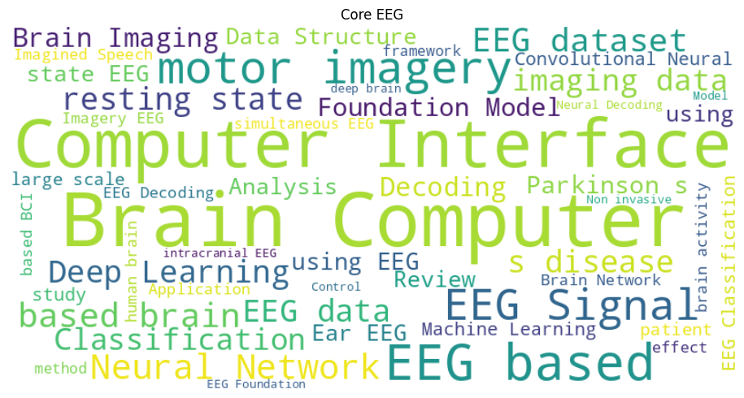
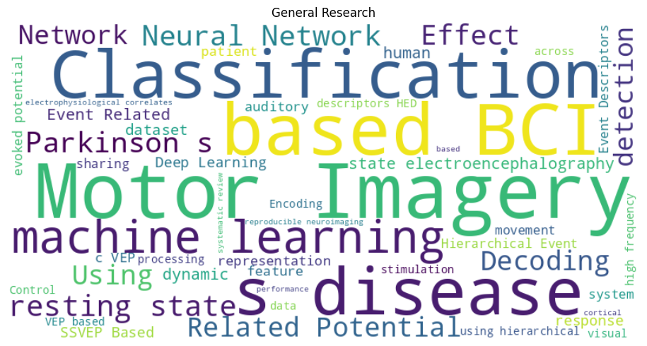
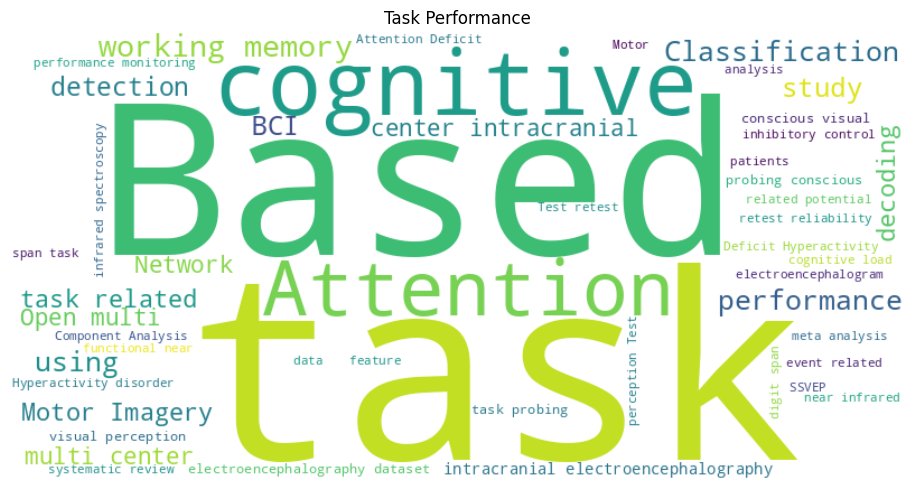
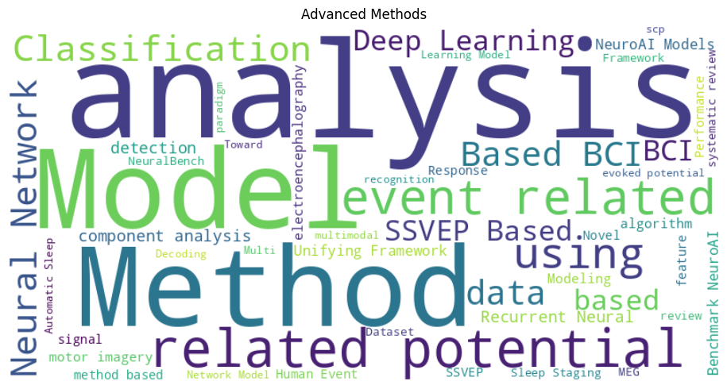

Comprehensive analysis of citation patterns, research themes, and network relationships across 0 BIDS datasets on NEMAR with confidence-filtered citations.
Datasets Analyzed
Click for detailsHigh-Confidence Citations
*Confidence ≥0.4 • Click for detailsResearch Bridge Papers
Click for detailsConfidence Threshold
Click for detailsDistribution of electrophysiological data types
Interactive network visualizations showing relationships between datasets and citations.
Word clouds showing key terms for each research theme cluster.



